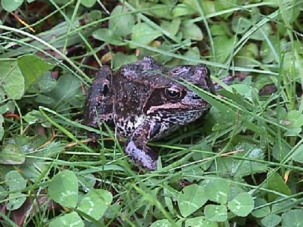
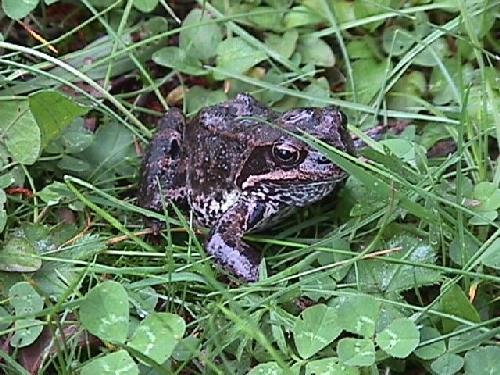

Do the kids learn to collect the garbage next time ?
Borkusorkus
said on
30 Jun 2005 at 01:18
Totally.
Jonathan
said on
30 Jun 2005 at 02:46
I’m also in
eule
said on
30 Jun 2005 at 04:13
bought.
grammarian
said on
30 Jun 2005 at 08:01
I took the liberty to print, as a Beta Book, all 16 episodes of “The Least Surprised” (including the seven irreproachably hidden in Dwemthy’s Array and the four I found this morning in an old metaclass stuffed away in the root cellar, thanks to your hint in TLS -5).
Using my daughter’s half-eaten glue stick, I meticulously affixed each episode to its own side of 8” x 8” periwinkle oak tag. On the bottom of each page, I printed (in Arial, by hand [no mean feat, mind you]) “Prepared exclusively for gramarian [sic].” (Incidentally, that typo will be my first submission to http://redhanded.hobix.com/theLeastSurprised/errata/ once it stops returning a 404.)
All said, I love the beta-book. Sure, it’s still under development, hasn’t had a full technical edit, and the layout is a bit haphazard, but the content is sublime.
I expect your TLS _Beta to be slashdotted any minute, so I’ve put on a pot of coffee (Ethiopian Yerga Cheffe), asked my wife to put her hair up (quick-like so it doesn’t look formally groomed, but matter-of-factly feminine [I especially love the way she looks in these laid back summer months]), and made a deal with the kids wherein they straighten up their respective rooms and the playroom and we’ll all go out to the Candy Box for ice cream later in the evening. We washed the dog last weekend so he’s good to go. In a nutshell, we’re ready for visitors.
Only one question remains: to where do I send my $54.95 for the Combo Pack?
why
said on
30 Jun 2005 at 10:04
I hope all eight of you will write forwards to the book. I’m going to need some filler. Some density.
grammarian, I’ll use your comment verbatim as long as you tell your wife to keep her damned distance. I caught her hiding in my rolltop desk. At first, I didn’t notice it was her, she was wearing a dress made entirely of pencils, which camoflauged her against my authorial backdrop. She probably would have pulled it off, except that I know the taste of real graphite and I know the taste of real fake graphite and this was real fake graphite, mixed with a bit of mint leaf (of which I have three cans coming.) She got away before I could question her, but not before I could tear off her leg and take it back to the lab.
I had my assistant, Dr. Odie Felicidades, who I have adopted and whose marriage I have arranged, test the leg for traces of its owner. We discovered nothing. I suspect he does not really know how to use the very instruments of science he employs.
I only saw him perform two of his tests successfully:
An experiment to see if he could successfully put his head through cheesecloth, and
At lunch break, he ate scones just like a shark would.
I did spot an eye peeping at us through the midsection of one of Dr. Felicidades’ cutaway torso models (which has a light-up pancreas and green goo that kids can pour into the system labelled “endocrines! hurry!”). This was obviously the eye of your wife, spying on me once again, for I could also see much of her mouth, wearing her signature grin with its trademark raisins-in-the-teeth.
She followed me up six flights of stairs, but I exceeded her, yes, I did! From such height, I commenced dropping water balloons on her that had the shape and smell of real hand grenades, but she stood unwaveringly erect throughout the attack and even took a moment to stare back at me fiercely, tossing her hair countless times with compasslike accuracy, with audible sparkling of the eyes. God, she is beautiful!
Eventually I got smart and sprayed her out with a high-powered nozzle. She washed out easily enough, rolling along the driveway, leg over leg, along with the stray cats and snails that crowd around my property, all waiting for their shot in the next issue of The Least Surprised, unaware that my compassion for animals has left me.
I stamp them feverishly, flatly with my foot, killing them forever, again with the
spraying, flesh soup down the gutter trails. But later I come to my senses and they all get ample speaking parts in Brody Pools or Every Cop is in a Car or one of the other comics that’s lying around just waiting to be consumed by fire.
MrCode
said on
30 Jun 2005 at 11:52
Hehehehehe…
_why is just so rightly wrong, it is wickedly delicioso like a cat training a dancing Lithuanian frog. Oh God, now I’m doing it!
MrWhyCodeWhenWeCanMeTaCode
said on
30 Jun 2005 at 14:42
MrCode: It’s frogs from the former Soviet Union which are the key to all of the green in TLS . Formerly we thought it was envy or perhaps American dollars (the two are often seen together, aren’t they?), but now we know that _why, by his own admission, is stamping them feverishly flat with his feet and coloring his comic with them. Sure, we suspected that Malsky was a monster, but now we know that his captioner is potentially a monster as well, after all he tore grammarian’s wife’s leg off (a double HAS -A relationship – this must be a clue)...
But wait, there’s an inconsistency in _why’s story because he describes her as “rolling along the driveway, leg over leg”. HA! How was she able to do that if she was missing a leg?! It would have been ‘leg over stump’.
If he can’t keep this story consistent, what other lines has he been feeding
us? Maybe that garbage collection stuff was all a sham…
Scout
said on
30 Jun 2005 at 15:59
Wait, why why should be harassed by those women ?
They should stop rushing heads down towards him just because he has a RedCloth.
Somebody call the eigenpolice and collect, or inject, all the proofs we have into a single File; those not staying in the rails have to be punished!
We’d better prepare it ourselves, I heard the marshal wasn’t good at typing those reports; the sooner it’s done, the sooner they’ll read each_line of it and process it.
Tsela
said on
30 Jun 2005 at 16:20
I’d do everything to be allowed to dissect the brain that can imagine such tortuous, and at the border between sense and nonsense, stories. It must be full of unseen marvels like three-legged female spies and kilt-wearing German shepherds singing “God save the Queen” in a lovely contra-falsetto canon.
Of course I’d need to learn to handle a scalpel. Not to mention the 42 Martini cocktails to put _why into a state of narcosis…
Bedtime Reader
said on
30 Jun 2005 at 16:29
My formerly neat and tidy bedroom is now strewn with coloured printouts of your poignant guide. My wife lays patiently by my side as i quiver with giggles whilst devouring rubies.
[why do i love you?]
([why] do i love you?)
MrMetaCode
said on
30 Jun 2005 at 17:03
Tsela: (or should I call you Tesla?) You sound like a scary person or a neurosurgeon.
_why: Whatever you do, avoid Martini cocktails.
Tsela: Actually, couldn’t you just use a CAT scan machine to figure out what’s going on in _why’s brain? Or is the cat too busy training a dancing Lithuanian frog?
_why: Perhaps you could serialize (in YAML ) your brain to this site tonight before you retire in order to prevent the carnage proposed by Tsela. We could all learn a great deal and you would still be available for further comment. Perhaps we could even create other instances of you like why the nerve. Maybe we could even add some members and a steeple and create parish the thought.
MrWhyCodeWhenYouCanMetaCode (another instance of self): Aren’t you glad he used a HAS -A relationship instead of gratuitously using inheritance in which case we would have had grammarian’s wife’s leg running around on it’s own calling “super, super!” without the rest of grammarians wife? That would have been hideous, but not nearly as bad as multiple inheritance would have been in this instance, so I expect this will show up in a movie plot soon.
why
said on
30 Jun 2005 at 17:35
grammarian’s wife is tripedal. Or regenerative. MrCode, MrWhyCodeWhy, and all other interested misters, I hope you will drop the issue so we can put this leg to bed once and for all!
You folks are very nice, but please let me get down off this stage, out from under these sweltering lamps, you can’t expect me to stand here in front of a maroon curtain forever. Anyway, I snuck out in a Siamese giraffe costume, not a Lithuanian frog costume as many of my critics claim I lurk about in. Falsehoods. I am not that kind of why.
Scout
said on
30 Jun 2005 at 17:37
If _why could serialize himself it means he’s an object, so he could also clone himself, but that’s forbidden by the law!
MrMetaMeta
said on
30 Jun 2005 at 18:11
Scout: _why’s brain is an object. _why HAS -A brain. His brain is an important part of his self, but not the totality of his self. As far as the legal aspects go: it’s not against the law in much of Asia and places where they run with a much lower safe level (down around 0). He could certainly get away with it in Dwemthy’s Array; so far law enforcement has been wary of going in there.
MrCode
said on
01 Jul 2005 at 11:27
I’m slightly frightened that this returns some real results. All hail the Great Interweb, Bringer of Dreams!
The Infamous Lithuanian Frog

Dave
said on
01 Jul 2005 at 13:27
you guys crackle me up.
Mr. Malsky
said on
01 Jul 2005 at 14:32
Please let me (and the frog) get down off this stage, out from under these sweltering grow lamps (which are not good for the frog, nor my bald head), you can’t expect us to stand here in front of a clover-green curtain forever. I mean, sure I’ve got a mic, but that doesn’t mean I want my private meetings spread all over the internet where people take my phrases out of context and accuse me of being a monster. I am not a monster, I care about this formerly communist frog. He’s trying to make a go at capitalism let’s give him a chance. Let’s put that Rails knowledge to good use and make him a website with a shopping cart, OK? Let’s teach the poor fella how to do powerpoint presentations to rival the best in Corporate America. There’s no stopping a frog who has a caring cat mentor, a shopping cart and powerpoint skills.
Besides, you guys have gone far afield from metaclasses in your discussions here. Yeah, I’ve been listening. Metaclasses aren’t just something to joke around about, they’re the LAW comrades! The L-A-W! Got that?! Now I’ve got to get back to my meeting with the Least Surprised.
Verslook the Frog
said on
01 Jul 2005 at 15:15
Me English es no good. But I will trie.
During the dance traning my great und wise friend Barticus Cat did unstrooct me on these metaclasses. These are dance classus wear dance teachers are taught, no?
Pardon, me is called by Barticus for more boot scoot boogee practeez.
- Graciously sined, Verslook the Frog, Vilnius, Lithuania
Tsela
said on
01 Jul 2005 at 15:27
Mr MetaCode: I am neither, but you can call me MetaTsela MetaMaster of the MetaSpaceTime MetaContinuum (MetaEater of MetaBrains, but that’s on the side, during my holidays on the MetaIsland of MetaMadagascar). CAT scans are overrated. However, I’d settle with a Meta-CAT scan ;) ... Although the best way would be using _why’s reflection methods. Anyone has a _why API list somewhere? Or just the source code?
And I can dance much better than the Lithuanian frog, thank you very much.
phil
said on
01 Jul 2005 at 19:16
Ah, this has become such a vibrant and diverse community…


Michel
I would buy a book made of this.
MenTaLguY
Seriously.
Ian
Double-seriously.
Scout
Triple-seriously.
Do the kids learn to collect the garbage next time ?
Borkusorkus
Totally.
Jonathan
I’m also in
eule
bought.
grammarian
I took the liberty to print, as a Beta Book, all 16 episodes of “The Least Surprised” (including the seven irreproachably hidden in Dwemthy’s Array and the four I found this morning in an old metaclass stuffed away in the root cellar, thanks to your hint in TLS -5).
Using my daughter’s half-eaten glue stick, I meticulously affixed each episode to its own side of 8” x 8” periwinkle oak tag. On the bottom of each page, I printed (in Arial, by hand [no mean feat, mind you]) “Prepared exclusively for gramarian [sic].” (Incidentally, that typo will be my first submission to http://redhanded.hobix.com/theLeastSurprised/errata/ once it stops returning a 404.)
All said, I love the beta-book. Sure, it’s still under development, hasn’t had a full technical edit, and the layout is a bit haphazard, but the content is sublime.
I expect your TLS _Beta to be slashdotted any minute, so I’ve put on a pot of coffee (Ethiopian Yerga Cheffe), asked my wife to put her hair up (quick-like so it doesn’t look formally groomed, but matter-of-factly feminine [I especially love the way she looks in these laid back summer months]), and made a deal with the kids wherein they straighten up their respective rooms and the playroom and we’ll all go out to the Candy Box for ice cream later in the evening. We washed the dog last weekend so he’s good to go. In a nutshell, we’re ready for visitors.
Only one question remains: to where do I send my $54.95 for the Combo Pack?
why
I hope all eight of you will write forwards to the book. I’m going to need some filler. Some density.
grammarian, I’ll use your comment verbatim as long as you tell your wife to keep her damned distance. I caught her hiding in my rolltop desk. At first, I didn’t notice it was her, she was wearing a dress made entirely of pencils, which camoflauged her against my authorial backdrop. She probably would have pulled it off, except that I know the taste of real graphite and I know the taste of real fake graphite and this was real fake graphite, mixed with a bit of mint leaf (of which I have three cans coming.) She got away before I could question her, but not before I could tear off her leg and take it back to the lab.
I had my assistant, Dr. Odie Felicidades, who I have adopted and whose marriage I have arranged, test the leg for traces of its owner. We discovered nothing. I suspect he does not really know how to use the very instruments of science he employs. I only saw him perform two of his tests successfully:
I did spot an eye peeping at us through the midsection of one of Dr. Felicidades’ cutaway torso models (which has a light-up pancreas and green goo that kids can pour into the system labelled “endocrines! hurry!”). This was obviously the eye of your wife, spying on me once again, for I could also see much of her mouth, wearing her signature grin with its trademark raisins-in-the-teeth.
She followed me up six flights of stairs, but I exceeded her, yes, I did! From such height, I commenced dropping water balloons on her that had the shape and smell of real hand grenades, but she stood unwaveringly erect throughout the attack and even took a moment to stare back at me fiercely, tossing her hair countless times with compasslike accuracy, with audible sparkling of the eyes. God, she is beautiful!
Eventually I got smart and sprayed her out with a high-powered nozzle. She washed out easily enough, rolling along the driveway, leg over leg, along with the stray cats and snails that crowd around my property, all waiting for their shot in the next issue of The Least Surprised, unaware that my compassion for animals has left me. I stamp them feverishly, flatly with my foot, killing them forever, again with the spraying, flesh soup down the gutter trails. But later I come to my senses and they all get ample speaking parts in Brody Pools or Every Cop is in a Car or one of the other comics that’s lying around just waiting to be consumed by fire.
MrCode
Hehehehehe…
_why is just so rightly wrong, it is wickedly delicioso like a cat training a dancing Lithuanian frog. Oh God, now I’m doing it!
MrWhyCodeWhenWeCanMeTaCode
MrCode: It’s frogs from the former Soviet Union which are the key to all of the green in TLS . Formerly we thought it was envy or perhaps American dollars (the two are often seen together, aren’t they?), but now we know that _why, by his own admission, is stamping them feverishly flat with his feet and coloring his comic with them. Sure, we suspected that Malsky was a monster, but now we know that his captioner is potentially a monster as well, after all he tore grammarian’s wife’s leg off (a double HAS -A relationship – this must be a clue)...
But wait, there’s an inconsistency in _why’s story because he describes her as “rolling along the driveway, leg over leg”. HA! How was she able to do that if she was missing a leg?! It would have been ‘leg over stump’. If he can’t keep this story consistent, what other lines has he been feeding us? Maybe that garbage collection stuff was all a sham…
Scout
Wait, why why should be harassed by those women ? They should stop rushing heads down towards him just because he has a RedCloth.
Somebody call the eigenpolice and collect, or inject, all the proofs we have into a single File; those not staying in the rails have to be punished!
We’d better prepare it ourselves, I heard the marshal wasn’t good at typing those reports; the sooner it’s done, the sooner they’ll read each_line of it and process it.
Tsela
I’d do everything to be allowed to dissect the brain that can imagine such tortuous, and at the border between sense and nonsense, stories. It must be full of unseen marvels like three-legged female spies and kilt-wearing German shepherds singing “God save the Queen” in a lovely contra-falsetto canon.
Of course I’d need to learn to handle a scalpel. Not to mention the 42 Martini cocktails to put _why into a state of narcosis…
Bedtime Reader
My formerly neat and tidy bedroom is now strewn with coloured printouts of your poignant guide. My wife lays patiently by my side as i quiver with giggles whilst devouring rubies. [why do i love you?] ([why] do i love you?)
MrMetaCode
Tsela: (or should I call you Tesla?) You sound like a scary person or a neurosurgeon.
_why: Whatever you do, avoid Martini cocktails.
Tsela: Actually, couldn’t you just use a CAT scan machine to figure out what’s going on in _why’s brain? Or is the cat too busy training a dancing Lithuanian frog?
_why: Perhaps you could serialize (in YAML ) your brain to this site tonight before you retire in order to prevent the carnage proposed by Tsela. We could all learn a great deal and you would still be available for further comment. Perhaps we could even create other instances of you like why the nerve. Maybe we could even add some members and a steeple and create parish the thought.
MrWhyCodeWhenYouCanMetaCode (another instance of self): Aren’t you glad he used a HAS -A relationship instead of gratuitously using inheritance in which case we would have had grammarian’s wife’s leg running around on it’s own calling “super, super!” without the rest of grammarians wife? That would have been hideous, but not nearly as bad as multiple inheritance would have been in this instance, so I expect this will show up in a movie plot soon.
why
grammarian’s wife is tripedal. Or regenerative. MrCode, MrWhyCodeWhy, and all other interested misters, I hope you will drop the issue so we can put this leg to bed once and for all!
You folks are very nice, but please let me get down off this stage, out from under these sweltering lamps, you can’t expect me to stand here in front of a maroon curtain forever. Anyway, I snuck out in a Siamese giraffe costume, not a Lithuanian frog costume as many of my critics claim I lurk about in. Falsehoods. I am not that kind of why.
Scout
If _why could serialize himself it means he’s an object, so he could also clone himself, but that’s forbidden by the law!
MrMetaMeta
Scout: _why’s brain is an object. _why HAS -A brain. His brain is an important part of his self, but not the totality of his self. As far as the legal aspects go: it’s not against the law in much of Asia and places where they run with a much lower safe level (down around 0). He could certainly get away with it in Dwemthy’s Array; so far law enforcement has been wary of going in there.
MrCode
I’m slightly frightened that this returns some real results. All hail the Great Interweb, Bringer of Dreams!
The Infamous Lithuanian Frog

Dave
you guys crackle me up.
Mr. Malsky
Please let me (and the frog) get down off this stage, out from under these sweltering grow lamps (which are not good for the frog, nor my bald head), you can’t expect us to stand here in front of a clover-green curtain forever. I mean, sure I’ve got a mic, but that doesn’t mean I want my private meetings spread all over the internet where people take my phrases out of context and accuse me of being a monster. I am not a monster, I care about this formerly communist frog. He’s trying to make a go at capitalism let’s give him a chance. Let’s put that Rails knowledge to good use and make him a website with a shopping cart, OK? Let’s teach the poor fella how to do powerpoint presentations to rival the best in Corporate America. There’s no stopping a frog who has a caring cat mentor, a shopping cart and powerpoint skills.
Besides, you guys have gone far afield from metaclasses in your discussions here. Yeah, I’ve been listening. Metaclasses aren’t just something to joke around about, they’re the LAW comrades! The L-A-W! Got that?! Now I’ve got to get back to my meeting with the Least Surprised.
Verslook the Frog
Me English es no good. But I will trie.
During the dance traning my great und wise friend Barticus Cat did unstrooct me on these metaclasses. These are dance classus wear dance teachers are taught, no?
Pardon, me is called by Barticus for more boot scoot boogee practeez.
- Graciously sined, Verslook the Frog, Vilnius, Lithuania
Tsela
Mr MetaCode: I am neither, but you can call me MetaTsela MetaMaster of the MetaSpaceTime MetaContinuum (MetaEater of MetaBrains, but that’s on the side, during my holidays on the MetaIsland of MetaMadagascar). CAT scans are overrated. However, I’d settle with a Meta-CAT scan ;) ... Although the best way would be using _why’s reflection methods. Anyone has a _why API list somewhere? Or just the source code?
And I can dance much better than the Lithuanian frog, thank you very much.
phil
Ah, this has become such a vibrant and diverse community…
Comments are closed for this entry.